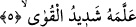
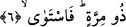

geleceğini haber vermişti. Ebu’l-Hasen Harakànî de haber verilen şekilde dünyaya
geldi.
Mesnevî sâhibi şöyle demiştir:
Onun rehberi levh-i mahfûzdur,
Neden mi mahfûzdur? Hatâdan mahfûz!
Bu ne yıldıznâme, ne fal, ne de rüyadır,
Allah’ın vahyidir ve en doğrusunu Allah bilir.
Avâmdan gizlemek için konuşurken
Sûfîler buna gönül vahyi derler.
Say ki gönül vahyidir, zâten gönül onun baktığı yerdir.
Gönül ona âgâh ise nasıl hatâ eder.
Ey mü’min ne zaman ki, “Allah’ın nûruyla bakar” oldun?
Hatâ, yanılgı ve şüpheden kurtuldun.”
5. Çünkü onu güçlü kuvvetli biri (Cebrâîl) öğretti.
“Çünkü onu” Kur’ân’ı Rasûlullah (s.a.)’a indirip okuyarak izah eden ve “öğreten”
Cibrîl’dir. Bu âyet, buradaki vahyin “kitap” mânâsına geldiğini göstermektedir. Şâyet
ilhâm mânâsına gelseydi, Cibrîl’in tâliminden murad, Rasûlullah (s.a.)’ın kalbine ilkâ
mânâsını taşıyacaktı ki bu da “Onu, Rûhu’l-emin Cebrâil indirdi.” (eş-Şuara, 26/193)
âyetinde olduğu gibi kalp kelimesiyle beraber gelmesi gerekecekti.
“Güçlü kuvvetli biri (Cebrâîl) öğretti.” Müthiş kuvvetleri olan melek Cibrîl öğretti.
Zira Cibrîl (a.s.) mû’cizelerin ızhârında bir vâsıtadır. Bu da onun kuvveti husûsunda
sana delil olarak kifâyet eder. Şöyle ki Cibrîl (a.s.) Lût (a.s.)’un kavminin kasabalarını
yerin altında bulunan siyah sudan sökerek çıkartıp kanadında taşıyarak göğe çıkarmış, -
hatta göktekiler o kasabaların köpek havlamaları ve horoz çığlıklarını duymuş- daha
sonra da ters çevirmek sûretiyle helâk etmiştir. Semûd kavmine de çığlık göndererek
bulundukları mekânlarında çakılı vaziyette sabahlayarak helâkine sebep olmuştur. Yine
Cibrîl (a.s.) İblis’in Kudüs şehrinin bir patika yolunda İsâ (a.s.) ile konuştuğunu görüp
kanadının rüzgârıyla ona vurmuş ve Hindistan’ın en ücra bir dağına savurmuştur. Cibrîl
(a.s.)’ın peygamberlere inmesi ve onlardan uzaklaşması göz açıp kapamadan daha
hızlıdır.